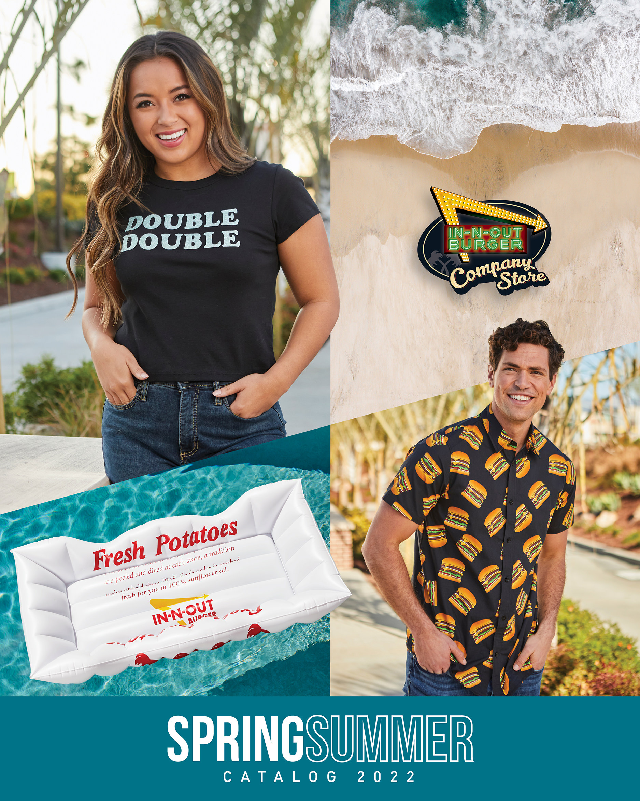

1. what to get at In-N-Out...the whole menu

2. Where to get the best merch from
A little background story about In-N-Out. In-n-Out was first founded in October 22, 1948 by Harry. The first In-N-Out was located in Baldwin Park,CA. They created In-N-Out because they wanted a nice spotless, highest quality food, and sparkling environment whereby the customer eat at.